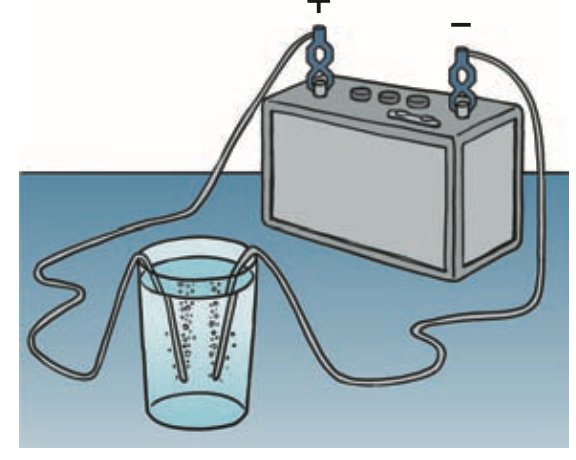

Energy in Society
Mathematical idea: Conservation provides the accounting rule used to evaluate technologies and energy claims.
Use source images, short reading cycles, discussion, and applications to connect the physical situation to a model you can explain.
Learning Target
Students will evaluate energy sources, energy transformations, efficiency, and real-world energy decisions using conservation of energy.
I can statements
- I can explain that energy is not created or destroyed but can be transferred or transformed.
- I can distinguish energy source, energy carrier, and energy transformation.
- I can explain why useful energy often becomes thermal energy.
- I can compare energy sources using evidence such as availability, efficiency, environmental impact, and reliability.
- I can critique claims about “free energy” or impossible energy-producing machines.
Vocabulary
These are words you will see in this section. Do not define them yet.
- energy source
- energy carrier
- energy transformation
- efficiency
- renewable energy
- fossil fuel
- geothermal energy
- perpetual motion
Use the preview activity to decide which words you already know, recognize, or do not know yet. Watch for these words in bold when they are first introduced or defined in the reading.
Preview: Skim Before You Read
Directions
Before reading closely, skim the vocabulary list and the section. Look at titles, headings, bold words, pictures, captions, diagrams, tables, and formulas. Do not try to understand everything yet. Your job is to notice what already looks familiar and make predictions about what this section may explain.
Step 1 — Sort the vocabulary. Write each vocabulary word in the column that best matches what you know right now. You may move a word later.
| Know for sure | Recognize | Don’t know yet |
|---|---|---|
Step 2 — Skim the section. Record what catches your attention before you read closely.
| What I noticed | |
|---|---|
| What I predict | |
| What I wonder |
Content: Read, Look, Annotate, Apply
Directions
Read in short chunks. Annotate the prose and the figures together: underline evidence, circle or highlight bold vocabulary, label arrows or measured features, connect a sentence to an image, and write short questions or connections in the margins.
Reading 1: Sources, carriers, and transformations
An energy source is a resource or process from which usable energy is obtained. The textbook traces many familiar sources back to sunlight: sunlight drives photosynthesis, weather, and the water cycle, while nuclear and geothermal processes provide important exceptions or additions.
An energy carrier transports or stores energy supplied from another source. The source emphasizes hydrogen as an example: energy must first be used to produce hydrogen, so hydrogen carries stored energy rather than creating energy from nothing.

Image read: Annotate the quantities, directions, or before-and-after evidence that the reading asks you to track.
Every useful technology involves an energy transformation. Solar cells transform radiant energy into electrical energy; turbines transform moving fluids into mechanical rotation and then electrical energy; fuel cells transform chemical energy into electrical energy.
The electrolysis/fuel-cell figure is especially useful because it shows two related processes in opposite directions: electricity can be used to separate water into hydrogen and oxygen, and a fuel cell can combine them to produce electricity and water.
Stop and Discuss
- Trace the direction of energy use in electrolysis and in a fuel cell.
- Explain why hydrogen should be called a carrier rather than automatically an energy source.
Example 1: Source or carrier?
Classify sunlight, gasoline, electricity in a wire, and hydrogen in a tank as source/carrier examples as appropriate, and justify two choices.
- Show the model, relationship, or comparison that answers the question.
- Explain what the result means physically.
You Try It 1: Source or carrier?
Classify wind, a charged battery, electricity, and hydrogen as source/carrier examples as appropriate. Explain two choices.
- Use the same physics idea with this new situation.
- Explain how your evidence or calculation supports the conclusion.
Reading 2: Useful energy, thermal energy, and efficiency
No real device turns all input energy into the one output we want. efficiency describes how much of the input becomes useful output for the intended task. Some energy is usually spread into thermal energy and becomes less useful for that task.
Calling that energy “lost” can be misleading. Conservation of energy still applies; the energy has moved into surroundings or into forms that are more difficult to use again.

Image read: Annotate the quantities, directions, or before-and-after evidence that the reading asks you to track.
renewable energy sources such as sunlight, wind, flowing water, tides, and geothermal resources are replenished by ongoing natural processes on human timescales. Their usefulness still depends on location, reliability, infrastructure, and environmental effects.
geothermal energy comes from Earth’s internal heat. The dry-rock diagram shows water circulating through hot fractured rock, carrying thermal energy upward to drive a turbine before being recirculated.
Stop and Discuss
- Trace the water loop in the geothermal diagram and mark where it gains thermal energy and where it helps produce electricity.
- Identify one reason a closed circulation loop can be useful in an energy system.
Example 2: Compare energy options
Two communities are comparing solar and geothermal electricity. List at least four evidence categories from the assessment target—availability, efficiency, environmental impact, reliability—and explain why no single category is enough.
- Show the model, relationship, or comparison that answers the question.
- Explain what the result means physically.
You Try It 2: Compare energy options
Compare wind and fossil-fuel electricity using availability, reliability, environmental impact, and efficiency. Explain why the “best” choice depends on evidence and context.
- Use the same physics idea with this new situation.
- Explain how your evidence or calculation supports the conclusion.
Reading 3: Evidence-based decisions and impossible claims
A fossil fuel stores chemical energy that ultimately came from ancient biological material. Fossil fuels are energy-dense and dispatchable, but their use has environmental consequences that must be part of a complete comparison.
Real energy decisions involve tradeoffs. Availability asks whether the resource exists where and when it is needed. Reliability asks how consistently power can be delivered. Environmental impact considers effects of extraction, operation, waste, and emissions. Efficiency considers how effectively input becomes useful output.
A perpetual motion claim says, in effect, that a machine can keep producing useful energy forever without a matching energy input. The textbook’s “Junk Science” discussion rejects such claims because they conflict with the deeply tested conservation of energy.
Critiquing a “free energy” claim does not mean rejecting new technology automatically. It means asking for a complete energy accounting, careful measurements, reproducible evidence, and an explanation that does not hide energy inputs or ignore thermal losses.
Stop and Discuss
- What evidence would you demand from a device claimed to produce more energy than it receives?
- Explain how conservation of energy can guide skepticism without preventing legitimate innovation.
Example 3: Critique a free-energy claim
A website claims a generator powers itself forever after one push and supplies extra electricity to a house. Identify the conservation problem and list two measurements needed to test the claim.
- Show the model, relationship, or comparison that answers the question.
- Explain what the result means physically.
You Try It 3: Critique a free-energy claim
A video claims a spinning magnetic device produces unlimited electricity with no energy input. Critique the claim using conservation and describe evidence needed for a fair test.
- Use the same physics idea with this new situation.
- Explain how your evidence or calculation supports the conclusion.
Vocabulary: Define the Terms
You have now seen these words in the reading, images, and practice. Use this table to consolidate the physics meaning of each term.
| Vocabulary term | Definition |
|---|---|
| energy source | a resource or process from which usable energy is obtained |
| energy carrier | a substance or form that stores or transports energy supplied from a source |
| energy transformation | a change of energy from one form to another |
| efficiency | the fraction or proportion of input energy that becomes useful output for a chosen task |
| renewable energy | energy from resources replenished by ongoing natural processes on human timescales |
| fossil fuel | fuel formed from ancient biological material that stores chemical energy |
| geothermal energy | usable energy from Earth’s internal heat |
| perpetual motion | a claimed process that would continue producing useful energy without adequate energy input |
Summary
- Energy sources provide usable energy; carriers store or transport energy supplied from sources.
- Real devices transform energy, and some useful energy typically spreads into thermal energy.
- Energy-source comparisons should use multiple evidence criteria, including availability, efficiency, environmental impact, and reliability.
- Perpetual-motion or “free energy” claims conflict with conservation unless a complete, measured energy input has been overlooked.
Common Mistakes
| Mistake | Why it is tempting | Check instead |
|---|---|---|
| Hydrogen is automatically an energy source. | It can power fuel cells. | Ask where the energy used to produce the hydrogen came from. |
| Less-useful thermal energy means energy was destroyed. | It may no longer perform the desired task. | Track it as transferred energy; total energy is conserved. |
| One criterion determines the best energy source. | Simple rankings are attractive. | Compare several criteria and state the context and evidence. |
What is the difference between an energy source and an energy carrier?
A company says its machine produces useful electrical energy forever with no continuing energy input. Explain what energy measurements or evidence would be needed to evaluate the claim.
What is one thing you learned in this section? Explain it in at least one complete sentence.
What is one thing from this section you still need to understand or practice more? Be specific.